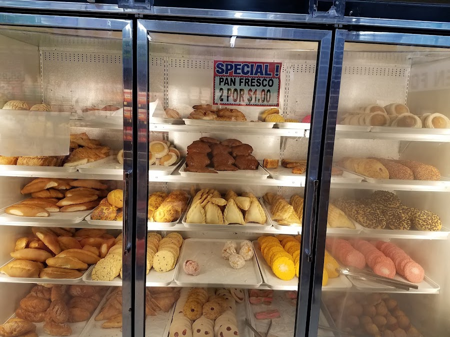
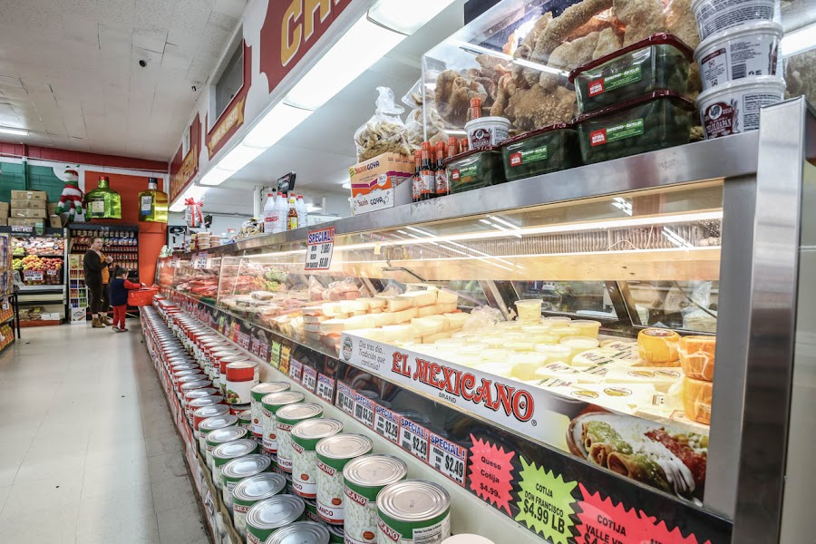
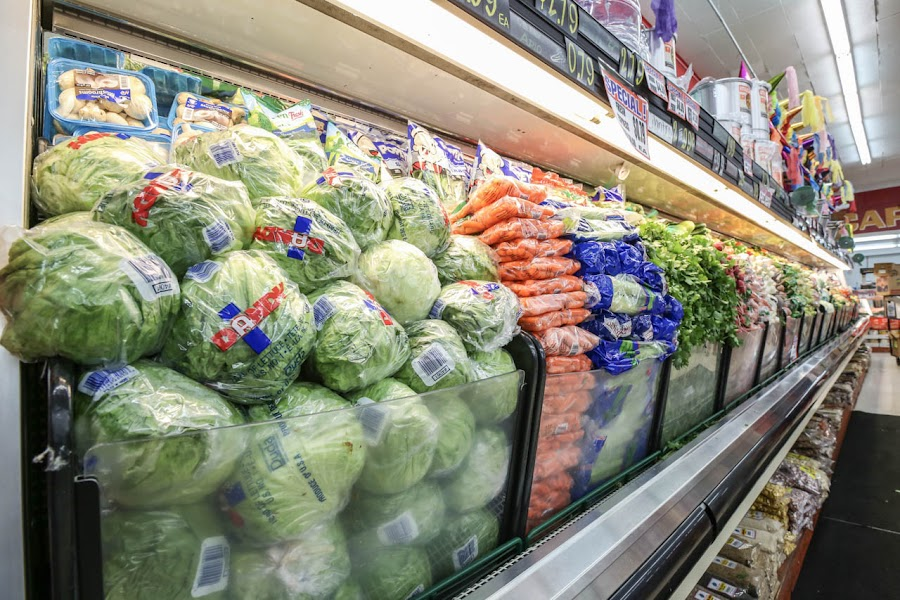

Fresh produce, quality meats, Mexican breads, and a full deli — everything your kitchen needs, all in one place on Fresno St.
Open Daily • 7 AM – 9 PM
Our Story
Newman Food Center has been the go-to grocery stop on Fresno Street for families across Newman and the surrounding valley. We keep it simple: clean aisles, fair prices, and a team that actually knows your name.
From Costco-sized staples to fresh Mexican pastries straight from the deli, we stock what the community actually cooks. Our butcher counter offers handcut meats at prices that make sense — no warehouse membership required.
What We Carry
Fresh Produce
Vegetables, melons, and seasonal fruit selected daily. Always in good shape and reasonably priced — great for enchiladas, chili, or whatever's on the stove tonight.
Butcher Counter
Hand-cut fresh meats at honest prices. Whether it's stew beef, carne asada cuts, or pork, our butcher counter delivers quality without the markup.
Mexican Deli & Pastries
Hot takeout Mexican food and freshly baked pan dulce from the deli. Tamales, tortas, and conchas — the kind you actually want to eat.
Pantry & Staples
Water, paper goods, and bulk staples at prices you'd expect from a warehouse club — without the drive to Modesto. We stock the essentials your household goes through.
Mexican Imports & Specialty Goods
Hard-to-find ingredients for authentic Mexican cooking — dried chiles, spices, masa, and more. If you cook it at home, we probably stock it.


What People Say
I absolutely love the butcher counter. Meat prices are great, meat is good. Store is clean. And now take out Chinese food is offered — it's delicious.
Treva S.
Fresh meats, produce and Mexican breads. It's always clean and neat too. Great staff and they are reasonably priced.
George S.
I ALWAYS buy my fresh vegetables, melons, and some fresh meats from this market. Their fresh produce is always in good shape. When I cook chili, enchiladas and any types of Mexican dishes I go to Newman Market. The employees are super nice and helpful.
Ernestine P.
Good prices on some items — they have water and toilet paper that you would find at Costco. There's a deli selling Mexican food and Mexican pastries.
Alejandro C.
Hours & Location
| Monday | 7:00 AM – 9:00 PM |
| Tuesday | 7:00 AM – 9:00 PM |
| Wednesday | 7:00 AM – 9:00 PM |
| Thursday | 7:00 AM – 9:00 PM |
| Friday | 7:00 AM – 9:00 PM |
| Saturday | 7:00 AM – 9:00 PM |
| Sunday | 7:00 AM – 9:00 PM |
1046 Fresno St, Newman, CA 95360
Open in Google Maps →
Get in Touch
Questions about stock, hours, or deli orders? Give us a ring.
(209) 862-3600